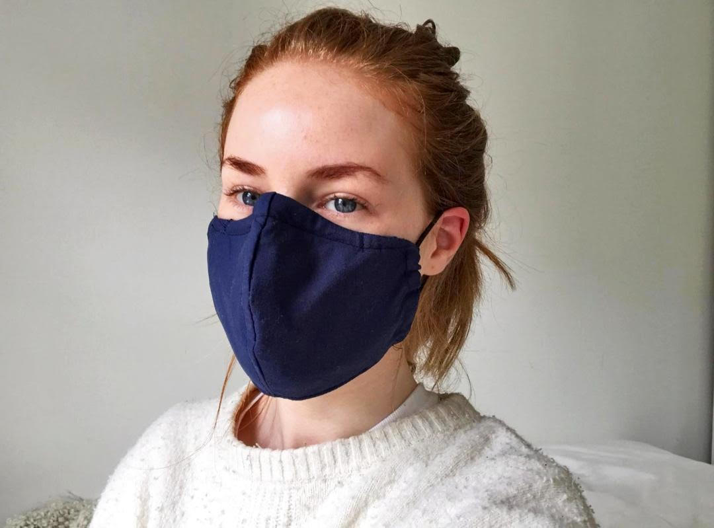

Welcome
Let me introduce myself, my name is Katy and welcome to my blog (said in MTV Cribs style). This *small* space on the web is a collection of personal musings of tackling being more sustainable in 2020. I was keeping this to myself for a while, however, I thought, who knows, these tips may help you too.
Two Truths and a Lie
As all good ice breakers start, I've put some some choices below
- I was born in Glasgow
- I work in mental health
- I own a chichilla
Did you get it? Scroll to the comments for the answer and whilst you're there, introduce yourself!